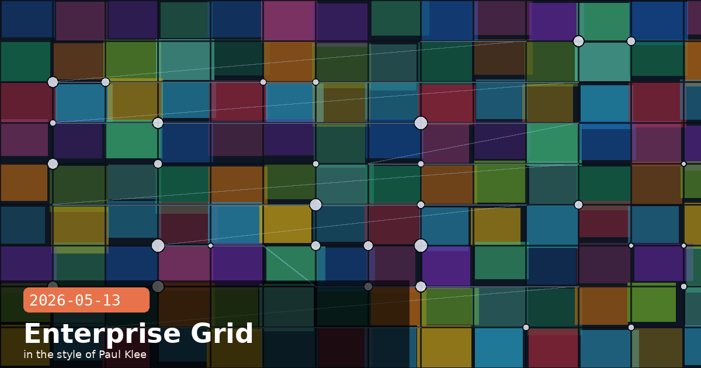

SAP Sapphire 2026: Claude Powers SAP Business AI Platform, Microsoft 365 Goes GA & v2.1.140 Ships

🧭 SAP Sapphire 2026: Claude Becomes the Primary Reasoning Engine for SAP Business AI Platform
At SAP Sapphire 2026 in Orlando today, SAP and Anthropic announced that Claude will become the primary reasoning and agentic capability embedded across SAP's entire AI-enabled solution portfolio — branded as the SAP Business AI Platform. The announcement is central to SAP's "Autonomous Enterprise" vision, in which over 200 pre-built AI agents handle end-to-end business processes without human handoffs. Daniela Amodei, co-founder and president of Anthropic, framed the integration pointedly: "With Claude on SAP Business AI Platform, that work happens inside the systems enterprises have already invested in, with the trust and governance SAP customers rely on."
What Claude will do inside SAP systems
Claude will power agents that connect directly to SAP S/4HANA, SAP SuccessFactors, and SAP Ariba, along with any external systems exposed through MCP connectors. The agents are designed to coordinate across application boundaries — closing the books at quarter-end, answering complex employee leave queries, and rerouting supplier orders mid-shipment — all within SAP's existing approval, policy, and compliance controls. Critically, Claude is not replacing Joule (SAP's existing AI assistant layer); it is powering the reasoning behind Joule agents, which supply the SAP application context and orchestration.
Industry focus areas for the Anthropic–SAP co-development roadmap
Public sector & healthcare — compliant document processing and case management workflows where auditability is non-negotiable
Education & life sciences — research data synthesis and regulatory submission automation
Utilities — field-service dispatch and asset maintenance prediction
What this means if you're an SAP shop evaluating AI
The SAP partnership is the most significant expansion of Claude's enterprise reach since the Bedrock and Vertex AI partnerships. If your organisation runs SAP S/4HANA or SuccessFactors, you no longer need to build a separate Claude integration layer — Claude will be reachable through SAP's own Joule agent SDK and Business AI Platform APIs. Expect early-access programmes through SAP partner channels from Q3 2026, with general availability for the first agent templates (Finance close, HR self-service) before year-end.
SAPSAP SapphireSAP Business AIJouleenterprise agentsAutonomous EnterpriseMCP
🧭 Claude for Microsoft 365 Is Now Generally Available — Excel, Word, PowerPoint GA; Outlook in Public Beta
Anthropic has moved Claude for Microsoft 365 to general availability for Excel, Word, and PowerPoint on every paid Claude plan (Pro, Max, Team, Enterprise), available on both Mac and Windows. Simultaneously, Claude for Outlook has entered public beta under the same plans — no invitation required. The practical leap over the earlier private preview is cross-app context persistence: Claude now acts as a single agent across all four Microsoft apps, retaining the conversation thread and document state as users switch between them. You no longer need to re-explain your spreadsheet context when you switch to drafting the accompanying Word report.
Installation
The releases are distributed as two Microsoft AppSource listings — one bundling Excel, PowerPoint and Word, the other dedicated to the Outlook beta. IT admins can deploy both from Microsoft Admin Center using the same policy controls already in place for other Microsoft 365 add-ins, including user-level and group-level access controls and revocation.
What makes the cross-app context useful in practice
Excel → Word: Analyse a financial model in Excel, then ask Claude to draft the executive summary in Word — it already knows the numbers and can cite cell ranges directly.
PowerPoint: Build slides from an open Word document without copy-paste; Claude reads both the outline and the narrative and proposes slide structure.
Outlook beta: Claude can draft replies that reference content from open Word or Excel files in the same session, reducing context-switching for report-heavy email workflows.
Governance note for Enterprise deployments
Claude for Microsoft 365 processes documents via the Claude API — content leaves Microsoft's infrastructure and passes through Anthropic's API endpoints before returning. Enterprise customers on zero-data-retention API agreements should verify that their Microsoft 365 add-in deployment routes through their existing API key (not a shared Anthropic key) to maintain their data processing guarantees. This is configured in the add-in's settings panel under API Key → Use organisation key.
Claude Code v2.1.140 shipped today with a tight set of developer-experience fixes. The most broadly impactful change is that the Agent tool's subagent_type parameter now accepts case- and separator-insensitive values — so "Code Reviewer", "code_reviewer", and "code-reviewer" all resolve to the same agent type. Previously, a case mismatch silently fell back to the default agent, producing hard-to-diagnose bugs in multi-agent pipelines.
Full changelog highlights
subagent_type matching — case- and separator-insensitive resolution; eliminates silent fallback to default agent on typo or format mismatch
/goal hang fix — the /goal command (set a completion condition for the current session) no longer spins indefinitely without feedback; now shows clear progress messages
Settings hot-reload symlink fix — symlinked ~/.claude/settings.json files now trigger correct change events; previously caused spurious ConfigChange hooks and missed real edits
CLAUDE_CODE_DISABLE_ALTERNATE_SCREEN=1 — new environment variable for terminals that don't support alternate screen mode (useful in some CI/log-capture setups)
Background service startup — extended startup timeout for machines with enterprise endpoint security software that intercepts process launches
Image paste feedback — improved visual confirmation when pasting images into the chat input
claude --bg crash fix — "connection dropped mid-request" error when the background service was about to idle-exit is now handled gracefully
# Upgrade to v2.1.140:
npm install -g @anthropic-ai/claude-code@latest
# Verify:
claude --version # should show 2.1.140 or later
# Test the subagent_type fix (previously would silently fall back):
# In your Agent tool call, "Code Reviewer" now resolves to code-reviewer
Who should upgrade immediately
If you use the Agent tool with custom subagent_type values and have ever wondered why the wrong agent was being selected, update now. The silent fallback was especially problematic in automated CI workflows where agent-type mismatches produced subtly wrong results rather than hard errors. The symlink settings fix is equally important for teams that manage ~/.claude/settings.json via dotfile managers (chezmoi, stow, Nix home-manager) that create symlinks rather than plain files.